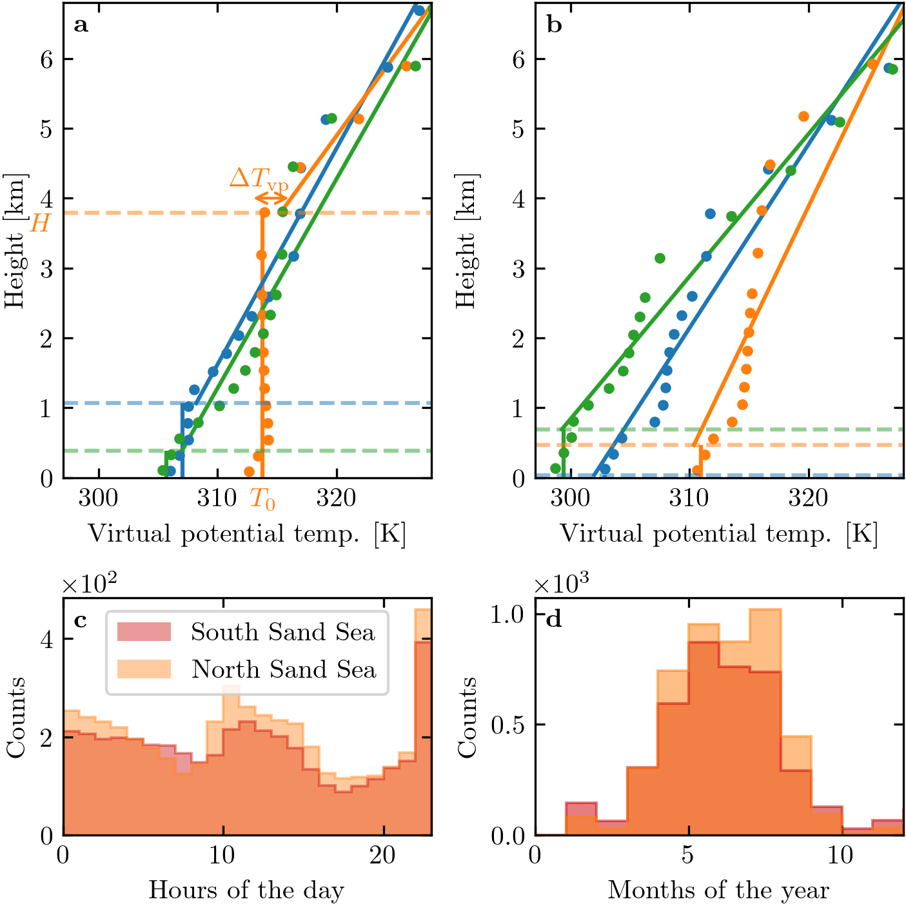

Note
Click here to download the full example code
Figure 8 – Online Resource#
import os
import sys
import numpy as np
import matplotlib.pyplot as plt
import matplotlib.transforms as mtransforms
sys.path.append('../../')
import python_codes.theme as theme
from python_codes.plot_functions import make_nice_histogram
def plot_vertical_profile(ax, height, Virtual_potential_temperature, grad_free_atm, theta_free_atm, blh, theta_ground, Hmax_fit, color='tab:blue', label=None):
Hfit = np.linspace(blh, Hmax_fit, 100)
#
line = ax.vlines(theta_ground, 0, blh/1e3, color=color, label=label, zorder=-3)
ax.axhline(blh/1e3, alpha=0.5, color=color, ls='--')
ax.plot(np.poly1d([grad_free_atm, theta_free_atm])(Hfit), Hfit/1e3, color=line.get_color(), zorder=-2)
ax.plot(Virtual_potential_temperature, height/1e3, '.', color=line.get_color(), zorder=-1)
# ax.scatter(theta_ground, blh/1e3, s=30, facecolors=line.get_color(), edgecolors='k', linewidth=2, zorder=0)
theme.load_style()
# paths
path_savefig = '../../Paper/Figures'
path_outputdata = '../../static/data/processed_data/'
# Loading data
Data = np.load(os.path.join(path_outputdata, 'Data_final.npy'), allow_pickle=True).item()
labels = [r'\textbf{a}', r'\textbf{b}', r'\textbf{c}', r'\textbf{d}']
# ## vertical profiles parameters
station = 'Deep_Sea_Station'
time_steps_bad = [10856, 30266, 33463]
time_steps_good = [2012, 30302, 30310]
colors = ['tab:blue', 'tab:orange', 'tab:green']
Hmax_fit = 10000 # [m]
# ## Distribution parameters
Stations = ['South_Namib_Station', 'Deep_Sea_Station']
fig, axarr = plt.subplots(2, 2, figsize=(theme.fig_width, 1*theme.fig_width),
constrained_layout=True, gridspec_kw={'height_ratios': [2, 1]})
# ## well-processed vertical profiles
for i, t in enumerate(time_steps_good):
plot_vertical_profile(axarr[0, 0], Data[station]['height'][:, t], Data[station]['Virtual_potential_temperature'][:, t],
Data[station]['gradient_free_atm'][t], Data[station]['theta_free_atm'][t],
Data[station]['Boundary layer height'][t], Data[station]['theta_ground'][t], Hmax_fit,
color=colors[i])
axarr[0, 0].set_xlabel('Virtual potential temp. [K]')
axarr[0, 0].set_ylabel('Height [km]')
axarr[0, 0].set_ylim(0, top=0.68*Hmax_fit/1e3)
axarr[0, 0].set_xlim(297, 328)
# Labelling some quantities
axarr[0, 0].text(axarr[0, 0].get_xlim()[0]-1, Data[station]['Boundary layer height'][time_steps_good[1]]/1e3, '$H$', ha='right', va='top', color='tab:orange')
axarr[0, 0].text(Data[station]['theta_ground'][time_steps_good[1]], axarr[0, 0].get_ylim()[0]-0.15, '$T_{0}$', ha='center', va='top', color='tab:orange')
axarr[0, 0].annotate('', xy=(313, 4), xytext=(316, 4), arrowprops=dict(arrowstyle="<->", shrinkA=0, shrinkB=0, color='tab:orange'))
axarr[0, 0].text((313 + 316)/2 - 1, 4.05, r'$\Delta T_{\textup{vp}}$', ha='center', va='bottom', color='tab:orange')
# ## ill-processed vertical profiles
for i, t in enumerate(time_steps_bad):
plot_vertical_profile(axarr[0, 1], Data[station]['height'][:, t], Data[station]['Virtual_potential_temperature'][:, t],
Data[station]['gradient_free_atm'][t], Data[station]['theta_free_atm'][t],
Data[station]['Boundary layer height'][t], Data[station]['theta_ground'][t], Hmax_fit,
color=colors[i])
axarr[0, 1].set_xlabel('Virtual potential temp. [K]')
axarr[0, 1].set_ylabel('Height [km]')
axarr[0, 1].set_ylim(0, top=0.68*Hmax_fit/1e3)
axarr[0, 1].set_xlim(297, 328)
# ## hourly distributions of ill-processed vertical profiles
colors = [theme.color_Era5Land_sub, theme.color_Era5Land]
for station, color in zip(Stations, colors):
hr = np.array([i.hour for i in Data[station]['time']])
make_nice_histogram(hr[np.isnan(Data[station]['Froude'])], 24, axarr[1, 0],
alpha=0.4, vmin=0, vmax=23, label='South Sand Sea' if station == 'South_Namib_Station' else 'North Sand Sea',
scale_bins='lin', density=False, color=color)
axarr[1, 0].set_xlabel('Hours of the day')
axarr[1, 0].set_ylabel(r'Counts')
axarr[1, 0].set_xlim(0, 23)
axarr[1, 0].ticklabel_format(axis='y', style='sci', scilimits=(0, 1))
axarr[1, 0].legend(loc='upper center')
# ## monthly distributions of ill-processed vertical profiles
for station, color in zip(Stations, colors):
month = np.array([i.month for i in Data[station]['time']])
make_nice_histogram(month[np.isnan(Data[station]['Froude'])], 24, axarr[1, 1],
alpha=0.5, vmin=0, vmax=23, label=' '.join(station.split('_')[:-1]),
scale_bins='lin', density=False, color=color)
axarr[1, 1].set_xlabel('Months of the year')
axarr[1, 1].set_ylabel(r'Counts')
axarr[1, 1].set_xlim(0, 12)
axarr[1, 1].ticklabel_format(axis='y', style='sci', scilimits=(0, 1))
# ## labelling
trans = mtransforms.ScaledTranslation(4/72, -4/72, fig.dpi_scale_trans)
for label, ax in zip(labels, axarr.flatten()):
ax.text(0.0, 1.0, label, transform=ax.transAxes + trans, va='top')
fig.align_labels()
plt.savefig(os.path.join(path_savefig, 'Figure8_supp.pdf'))
plt.show()
Total running time of the script: ( 0 minutes 1.122 seconds)